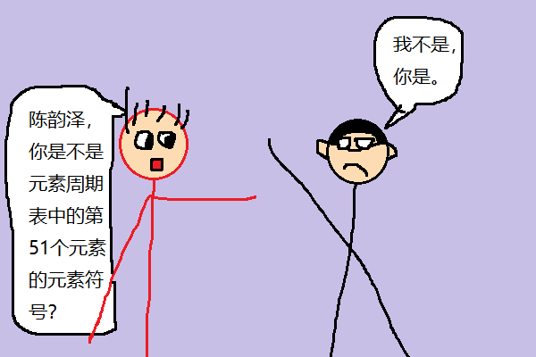
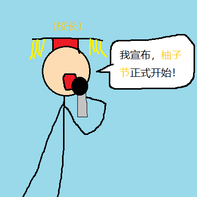
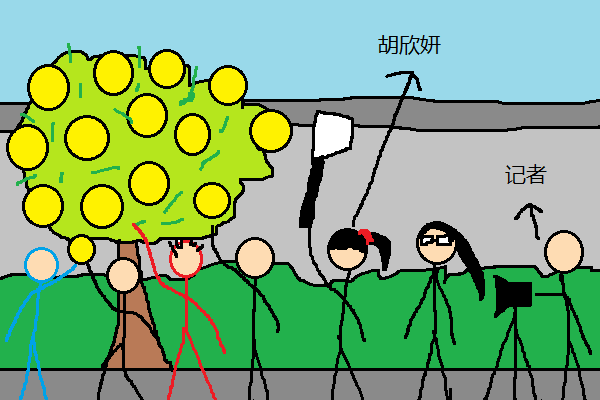
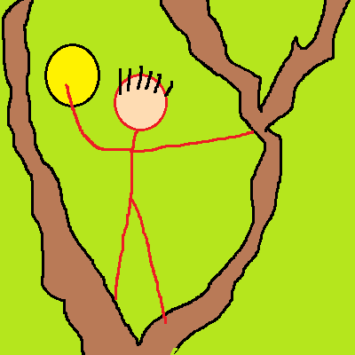
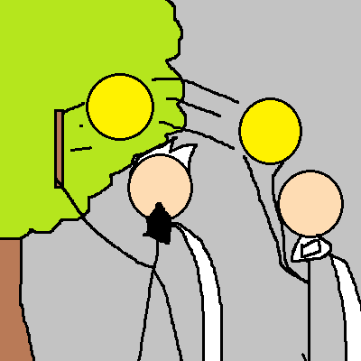
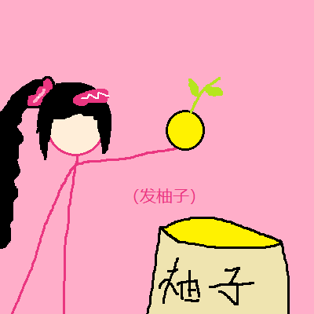
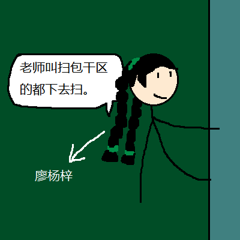

第131篇 日记
2025年11月25日 Tue.
特别篇：第3届柚子节

今天下午，我和许梓浩还在班上玩:
许梓浩：陈韵泽，你是元素周期表中的第51个元素的元素符号吗[1]？我：我不是，你是。
然后，学校广播响了：“请各班到升旗台前集合，柚子节马上开始…………”
很快，席老师就到班上来了。叫我们赶紧排队，去升旗台集合。
全校师生到齐后，郑校长便宣布：“柚子节正式开始！”
然后，所有的同学都兴奋地欢呼起来。
然后我们到了我们班的柚子树下，班上的同学各显神通，开始摘柚子。胡欣妍带来像上图中的东西，很快就把几个柚子摘下来；许梓浩上树摘了很多柚子下来；陈睿铭拿棒子把柚子敲下来，杨锐去接陈睿铭敲下来的柚子。
突然有一片叶子掉了下来，李钧宸往那片叶子上看，结果叶子掉到了他的眼睛上。李钧宸说：“啊！我的 eyes！”
大家回班后，学校给每个班级都发了一袋柚子，席老师让蔡盛楠发柚子，一人一个。她给我发了一个破的柚子，给许梓浩发了一个直径4cm的柚子，给陈睿铭发了一个大柚子。
我说：“蔡盛楠，你太善了。”许梓浩说：“这么小，够我吃吗？”然后他就用笔在柚子上写着：“我操你妈的，柚子这么小，够我吃吗？”然后我和李钧宸看到许梓浩在柚子上写字，便在柚子上画画。我画了个裕仁[2]，李钧宸画了个大笑脸。
过了一会，廖杨梓在班门口说：“老师叫扫包干区的都下去扫。”这时许梓浩还在玩，他听到了，说：“我星期一扫包干区呀！”于是便拿着扫把下去扫了。
注释：